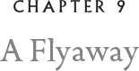

Our parents, all four of them, had to return to the front almost immediately upon our return from Dark Fowl, for indeed it had been confirmed that the front had moved closer. Bylyric was getting bolder. It was even said that in the far north — the upper H’rath of the H’rathghar glacier — Ice Talon fighters had taken to plucking up newborn snow leopard cubs — eating babies! Bylyric had developed a taste for them!
But we were most anxious about the rumors of enemy slipgizzles in places they’d never been before. It was hard to believe that in our quiet forest of pine, oak, fir, and birch, a slipgizzle might be lurking. What could ever interest a spy here? For life was indescribably boring.
Moss and I practiced constantly, flying about with our liffen claws and picking up sticks and pretending they were real weapons. Broody Gundesfyrr was installed on the nest where Mum had been sitting on the egg. I could tell Mum was done with domestic life and was aflutter to get back to combat. I couldn’t help but notice, as Mum climbed off the nest and Gundesfyrr hoisted herself up, that Mum’s brood patch was tiny compared to Gundesfyrr’s. The brood patch is a nearly bare spot on the belly that keeps eggs extra warm because it has a high density of blood vessels. Gundesfyrr’s was twice as big as Mum’s. Well, she was a professional after all, and Mum? Mum was a commando in the Ice Dagger unit.
Moss and I were big enough now that we could go out each evening at tween time and practice. We were supposed to stick close to our trees, but we never did. One evening, long after tween time, Moss and I were exploring a birch grove on the southwest side of Stormfast. We were on the cusp of the small seasons that fall between the midwinter moons and are known as lintla schnee (snow with vapor), and astrilla schnee (snow with starlight). However, on this night, these two disparate types of snow were falling at the same time. It created a peculiar effect against the white bark of the trees, almost as if the tree trunks were rippling. Above the tops of the trees, however, crisp snowflakes mingled with the starlight.
We had just settled on a branch where we could best enjoy the two snows when I looked across and saw a slight bulge on the neighboring tree trunk. At first, I thought it was a gall. Galls are abnormal growths on trees caused by mites or insects, and can eventually strangle a tree. But this particular gall seemed to be shrinking instead of growing larger. All of a sudden, I realized it was not a gall, but a wilfing Snowy Owl.
“There’s an owl in that tree across the way, Moss,” I whispered. “A Snowy.”
“Is she clawed?” he asked.
I glanced over sharply, but her talons were bare and she appeared to be the least likely warrior in the world. She flinched with fear, and I felt sorry for her. I had the feeling she might be an orphan.
“Should we say something?” I asked Moss.
“You’re asking me?”
“Well, you’re a Snowy. She’s your species!” I’m not sure what I was thinking. It was sort of a stupid thing to say, because it’s not like there’s an etiquette or guide for each species. “I feel sorry for her.”
“Me too,” Moss said.
“Hi,” I said finally. It was barely a whisper.
“Hi there!” Moss greeted her softly.
“Me?” she answered back. Moss and I looked at each other.
“Yeah, you,” Moss said. “There’s no one else around.”
“You sure?” she replied.
“Pretty sure,” I said.
“You won’t tell?” she asked.
“Tell what?”
“I — I —” she began to stammer. “I’m a flyaway.”
“You mean, you have no hollow?” Moss asked. “No mum, no da?” We had heard tales of flyaways but never met one.
“Me mum died in a battle down in the Ice Talons.” This Snowy had a brogue I had never heard before. Nothing like my da’s brogue from the Tridents. “And me da got himself a new mate. She doesn’t like me much. So I left.”
“Left?” Moss said. “Just up and left?”
“Ya. She was really mean. Calls me ‘Splotch.’ I’ve had the gray scale, as you can see. Left these ugly patches.”
“That’s cruel,” I said.
“That’s Rodmilla,” she replied.
“Rodmilla?” Moss said.
“Me stepmum.”
“But what’s your name?” Moss and I flew over to the branch where she perched.
“Thora,” she answered.
“Thora! That’s a beautiful name,” I said. “Where are you from?”
“Oh, my accent. Yes. Firth of Canis.”
“Firth of Canis!” Moss exclaimed. “I’ve heard of that. It’s way to the north. Why are you here — so far away?”
“It’s hard to explain, but …” She hesitated. “Me stepmother made me life insufferable.” Thora clamped her eyes shut as if the very thought scorched her gizzard.
“Where will you go?”
“Maybe … maybe Dark Fowl.”
“You mean to become a cadet,” I said.
“No, a smith.” She swelled up and her yellow eyes burned bright with excitement.
“A smith?” I asked. “A blacksmith?” She nodded. “But we were just there maybe a moon ago, and we didn’t see a single female smith.”
Thora suddenly swelled up to twice her size. “Well, it’s about time!” she roared. After this sudden and completely unexpected outburst, Thora eyed our blunt-tipped battle claws.
“You know,” she said. “I could make those training claws into real battle claws for you.”
“You can?”
“Follow me,” she said. She spread her wings and lofted off the branch. She was a lovely flier. I could tell she had a deep sense of the wind as we skimmed through the trees of the birch grove to a small, wooded glade. She began plying the crosscurrents that were blowing in at odd angles and then tilted her wings and began to wheel into a steep turn. Looking down, I could see below a dim glow through the vapor snow. We alighted on a good-sized table rock. Just beneath us was a pit surrounded by large, scorched stones.
“What is it?” Moss asked.
“What does it look like?” Thora countered.
“A forge?” I replied tentatively.
“Exactly. A secret forge.”
“But whose forge?”
“A Rogue smith. A Burrowing Owl’s. That’s why it is so beautifully excavated.”
“Aren’t you afraid he might come back?”
“He’s dead. I found his body. It was nearly gone. Ground predators, raccoons and such. But I took the remains and burned them.”
“And he left his tools?” Moss said.
“Yes, and they are beautifully made. He was a master.”
“Aren’t you worried someone might come back to look for him and, well, become suspicious if you’re here and not the Burrowing Owl?”
“I don’t think anyone knew he was here.” She lowered her voice. “I think he was an arms trader to both sides.”
“That’s awful!” I hissed. I was astounded that someone would try to play both sides of a war. Moss and I were both silent for several seconds as we tried to grapple with this idea.
“What do you do here, Thora?” asked Moss.
“I practice. By the time I get to Dark Fowl, I am going to be the best apprentice Orf has ever seen. If he turns me down because I am a female, well, that’s so pathetic I can’t even bother thinking about it,” she huffed. “C’mon. Want me to turn those training claws into something real?”
“Sure!” we both said.
We stayed until the darkness began to slip away and the sky turned to gray.

“Where in hagsmire have you two been?” Gilda hissed when we returned. Moss and I both blinked. We had never heard a nest-maid snake swear.
“Don’t blink! I can swear. I can swear like the best of them. Do you two realize it’s almost twixt time?”
Gilda began flicking her forked tongue, sniffing. This is the way snakes pick up scents. “You’ve been near fire, haven’t you?” She narrowed her eyes, coiled up, flashed her fangs, then hissed, “Don’t you dare lie to me!” She was absolutely fearsome. My gizzard seized. I really thought that she might turn her head into a hammer and smash us to smithereens.
“All right!” I said. “But you must promise not to tell Gundesfyrr — please!” Her eyes glittered. She nodded her head.
“We have to really trust you on this, Gilda,” Moss said. “For in telling you, we are sort of — no, not sort of — really breaking a promise.”
“Oh, dear,” she said, suddenly contrite. “I wouldn’t want you to do that.” Her coil, which had been piled high, shrank suddenly. She was literally unraveling. “Oh, no, no. Trust is all we have in a civilized world. If we cannot trust each other, we have nothing.”
“You really don’t want to know?” I was dumbfounded.
“Don’t tell me,” she said in a firm voice that brooked no argument.
I tipped my head to one side to study this curious snake.
For the next several nights, Moss and I went to the secret forge to watch Thora refashion our training claws into true battle claws. Gilda always covered for us. She never asked questions, but one could see her almost savoring the scents that clung to our feathers. And indeed, there was a touch of envy in her eyes. She so clearly sought adventure beyond that of stalking the vermin in our nest.
Both Moss and I thought Thora was improving as a smith before our eyes. She had had a rather brutal way with the hammer in the beginning, but she became more adept in wielding it and delivering small, very precise strikes, the kind that make the sharp cutting edge of a blade, or in this case the edges of our battle claws. Getting rid of the blunt tips was the easy part, but honing the edges was difficult, especially considering there were no Kielian snakes around to finish them off. To achieve the sharpest edge possible, she had to heat and reheat the claws numerous times. It was fascinating to watch the claws go through the shifting spectrum of color. In the beginning, the metal was cool gray, but as it heated, it became a dark red, then an almost translucent orange, and finally yellow, the color indicating the greatest heat.12 At certain points, the claws were withdrawn from the fire and hammered. Then, once again, Thora would put them back into the flames. The reason she had been in the birch grove the night we met her was to collect the papery bark of the trees, as it was excellent kindling.
We loved our visits to the secret forge. The memory of those is incised in my mind’s eye. The forge was in the center of a circle of fir trees, and we would perch on scattered rocks or a large stump, upwind of Thora’s fires. As the night darkened, the flames grew brighter and Thora’s hammer struck the anvil faster and faster as our training claws became instruments of death. Sparks swirled up, enveloping Thora in a cocoon of radiance. Above, the crowns of the fir trees sifted the light of a nearly full moon.
On the fifth night, the claws were finally finished.
“Now, you two listen to me,” Thora said, and suddenly she seemed much older than her years. “Use these well. Don’t be stupid. And here’s something else.” She reached for a botkin.
“What’s that?” I asked, peering into the small bucket that collier owls used to collect coal.
“Caps,” she replied.
“What for?” But as soon as Moss asked the question, it dawned on us. Our fathers had left us with blunt-tipped training claws, not fighting ones, not razor-sharp battle claws. Any grown-up who saw these would be furious. We were considered too young to wield such deadly weapons.
“Thora, we don’t know how to thank you,” I said.
She hesitated a moment before replying. “I know how,” she said, and cast her eyes down shyly. “You can come back. Come back and visit me.”
“Of course!” we both said.
“I was afraid that when I finished your claws, you’d stop coming. That’s why it took me so long. I’m — I’m so alone here.”
“Come back with us,” I said. “To my hollow.”
“Or mine,” Moss chimed in.
“No. No, I can’t. I have to stay at this secret forge.” She cast her eyes toward the dying flames. “I have to practice.”
So we did come back, from the time of the lintla schnee through the full glorious nights of the astrilla schnee and then into the time of the krepla schnee, the blinding snow.